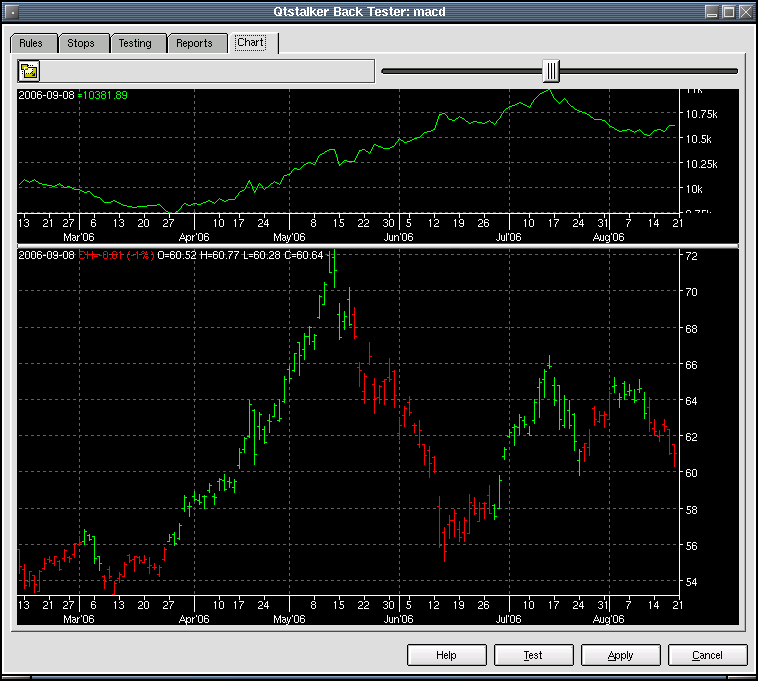

Frequently Asked Questions
Back Tester Charts
This page displays 2 charts. The top chart is an equity curve of the account balance. The bottom chart is a buy/sell point chart using the close plot as a reference. The green bars indicate a long position. Red bars indicate a short position. Blue bars indicate no trade.